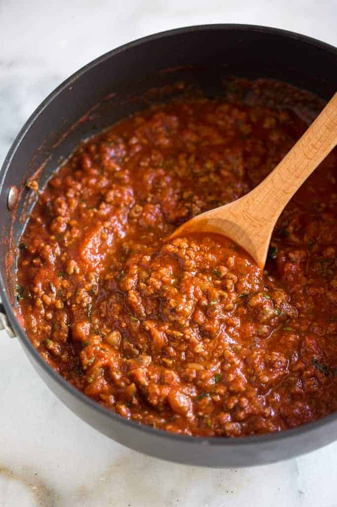

Homemade Spaghetti Sauce

Spaghetti sauce is a classic Italian dish that is perfect for any
occasion. Made with crushed tomatoes, garlic, onion, and herbs, this
rich and flavorful sauce is perfect to dress your spaghetti or any other
pasta of your choice. The warm and comforting aroma of this sauce will
fill your kitchen and invite your taste buds to indulge in its
deliciousness. It's a perfect comfort food, easy to make and can be
customized to your liking. Whether you want a more meaty sauce or a
vegetarian one, you can add your own personal touch to it. Served with
pasta, this dish is a satisfying meal that will please the whole family.
Ingredients:
- 1 pound ground beef
- 1 medium onion, chopped
- 4 cloves garlic, minced
- 1 small green bell pepper, diced
- 1 (28 ounce) can diced tomatoes
- 1 (16 ounce) can tomato sauce
- 1 (6 ounce) can tomato paste
- 2 teaspoons dried oregano
- 2 teaspoons dried basil
- 1 teaspoon salt
- ½ teaspoon ground black pepper
Instructions:
-
Combine ground beef, onion, garlic, and green pepper in a large
saucepan over medium-high heat. Cook and stir until meat is browned
and crumbly and vegetables are tender, 5 to 7 minutes. Drain grease.
-
Stir diced tomatoes, tomato sauce, and tomato paste into the pan.
Season with oregano, basil, salt, and pepper. Simmer spaghetti sauce
for 1 hour, stirring occasionally.
Previous
Home
Next